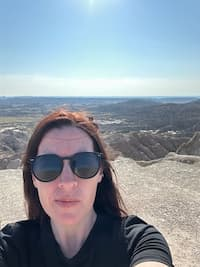

Alana Fox | WDD 130

Hello! My name is Alana Fox and I am from Mesa, Arizona. I enjoy reading biographies and mysteries. I participate in outdoor activities including hiking there are many beautiful places to do this near my home. I also enjoy creating things whether that's with tools and carpentry or baking cakes I enjoy the challenge of making new things. Baking wasn't my favorite thing to do originally but I started baking when I get nieces and nephews and now make sculptured cakes it has also provided me with a skill I can share through the charity For Goodness Cakes to make birthday cakes for foster children. I decided to go back to school to increase my knowledge and grow. I am studying Software Development to help increase career opportunities. I am excited to learn more about Web development as my current job at Oneil Printing is to monitor and manage client websites it has been a great place to work and I want to be able to provide our clients with a more personal experience.